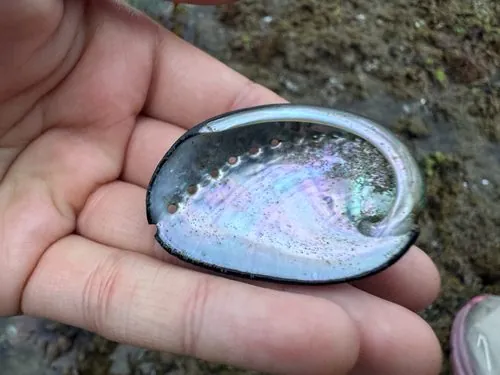

软体动物 · 动物界
黑鲍 Haliotis cracherodii

壳面黑褐、体型中等的北美鲍类，栖于加州岩礁潮间带，因过度捕捞与枯萎病被列为濒危物种。
- 分类
- 门软体动物门纲腹足纲目原始腹足目科鲍科属鲍属
- 栖息环境
- 岩礁海岸潮间带至浅潮下带的岩石缝隙与礁面
- 地理分布
- 美国加利福尼亚州至墨西哥下加利福尼亚北部的岩礁海岸
- 保护级别
- 美国列为濒危物种，全面禁捕，种群恢复缓慢
物种志
黑鲍的壳长约十三至二十厘米，壳形椭圆而扁平，壳面黑褐至深蓝黑色，表面光滑，壳顶低平，壳缘有一列呼吸孔，孔数约五至九个。壳内面呈珍珠光泽的银白色，中央有一块深色的肌肉痕，那是发达的闭壳肌附着处。足部肥厚，吸着力极强，贴在岩石上很难撬下，腹足边缘有一圈黑色触手。
它分布于美国加利福尼亚州至墨西哥下加利福尼亚北部的岩礁海岸，栖息在潮间带至浅潮下带的岩石缝隙和礁面，以海藻为食，尤其偏爱巨藻和红藻。它夜间活动，白天吸附在岩缝里躲避天敌与干燥。由于长期捕捞和一种称为枯萎病的细菌感染，其种群在二十世纪后期急剧崩溃，如今被列为濒危物种并全面禁捕，恢复极为缓慢。
形态与习性
- 壳长约十三至二十厘米，壳形扁平
- 壳色黑褐至深蓝黑，壳内银白珍珠层
- 呼吸孔壳缘一列五至九个孔
- 食性以巨藻、红藻等海藻为食
- 活动夜间取食，白天吸附岩缝
- 威胁过度捕捞与枯萎病，现已禁捕
趣味知识
- 它吸附在岩石上的力气大得惊人，不借助工具几乎撬不下来。
- 壳缘那排小孔是排水和呼吸的通道，水流从孔里进出。
- 一种细菌引起的枯萎病让它大片死亡，加上捕捞，种群几乎崩溃。